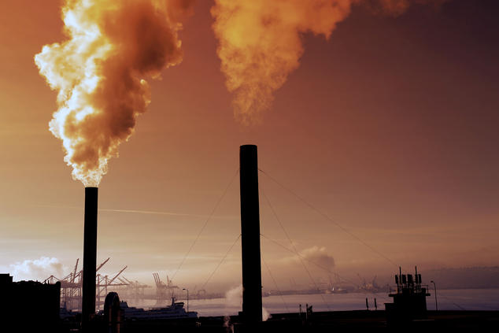

Air pollution refers to the release of pollutants into the air—pollutants which are detrimental to human health and the planet as a whole. According to the World Health Organization (WHO), each year air pollution is responsible for nearly seven million deaths around the globe. Nine out of ten human beings currently breathe air that exceeds the WHO’s guideline limits for pollutants, with those living in low- and middle-income countries suffering the most. In the United States, the Clean Air Act, established in 1970, authorizes the U.S. Environmental Protection Agency (EPA) to safeguard public health by regulating the emissions of these harmful air pollutants.
“Most air pollution comes from energy use and production,” says John Walke, director of the Clean Air Project, part of the Climate and Clean Energy program at NRDC. “Burning fossil fuels releases gases and chemicals into the air.” And in an especially destructive feedback loop, air pollution not only contributes to climate change but is also exacerbated by it. “Air pollution in the form of carbon dioxide and methane raises the earth’s temperature,” Walke says. “Another type of air pollution, smog, is then worsened by that increased heat, forming when the weather is warmer and there’s more ultraviolet radiation.” Climate change also increases the production of allergenic air pollutants, including mold (thanks to damp conditions caused by extreme weather and increased flooding) and pollen (due to a longer pollen season). “We’ve made progress over the last 50 years improving air quality in the United States thanks to the Clean Air Act,” says Kim Knowlton, senior scientist and deputy director of the NRDC Science Center. “But climate change will make it harder in the future to meet pollution standards, which are designed to protect health.”
The effects of air pollution on the human body vary depending on the type of pollutant and the length and level of exposure—as well as other factors, including a person’s individual health risks and the cumulative impacts of multiple pollutants or stressors.
These are the two most prevalent types of air pollution. Smog (sometimes referred to as ground-level ozone) occurs when emissions from combusting fossil fuels react with sunlight. Soot (also known as particulate matter) is made up of tiny particles of chemicals, soil, smoke, dust, or allergens—in the form of either gas or solids—that are carried in the air. The sources of smog and soot are similar. “Both come from cars and trucks, factories, power plants, incinerators, engines, generally anything that combusts fossil fuels such as coal, gas, or natural gas,” Walke says
Smog can irritate the eyes and throat and also damage the lungs, especially those of children, senior citizens, and people who work or exercise outdoors. It’s even worse for people who have asthma or allergies: these extra pollutants can intensify their symptoms and trigger asthma attacks. The tiniest airborne particles in soot, whether gaseous or solid, are especially dangerous because they can penetrate the lungs and bloodstream and worsen bronchitis, lead to heart attacks, and even hasten death. In 2020 a report from Harvard’s T. H. Chan School of Public Health showed COVID-19 mortality rates in areas with more soot pollution were higher than in areas with even slightly less, showing a correlation between the virus’s deadliness and long-term exposure to fine particulate matter and illuminating an environmental justice issue.
Because highways and polluting facilities have historically been sited in or next to low-income neighborhoods and communities of color, the negative effects of this pollution have been disproportionately experienced by the people who live in these communities. In 2019 the Union of Concerned Scientists found that soot exposure was 34 percent higher for Asian Americans, on average, than for other Americans. For Black people, the exposure rate was 24 percent higher; for Latinos, 23 percent higher.
By trapping the earth’s heat in the atmosphere, greenhouse gases lead to warmer temperatures, which in turn lead to the hallmarks of climate change: rising sea levels, more extreme weather, heat-related deaths, and the increased transmission of infectious diseases. In 2018 carbon dioxide accounted for 81 percent of the country’s total greenhouse gas emissions, and methane made up 10 percent. “Carbon dioxide comes from combusting fossil fuels, and methane comes from natural and industrial sources, including large amounts that are released during oil and gas drilling,” Walke says. “We emit far larger amounts of carbon dioxide, but methane is significantly more potent, so it’s also very destructive.” Another class of greenhouse gases,hydrofluorocarbons (HFCs), are thousands of times more powerful than carbon dioxide in their ability to trap heat. In October 2016 more than 140 countries reached an agreement to reduce the use of these chemicals—which are found in air conditioners and refrigerators—and develop greener alternatives over time. Though President Trump was unwilling to sign on to this agreement, a bipartisan group of senators overrode his objections in 2020 and set the United States on track to slash HFCs by 85 percent by 2035. According to David Doniger, senior strategic director of NRDC’s Climate and Clean Energy program, “the agreed-to HFC phasedown will avoid the equivalent of more than 80 billion tons of carbon dioxide over the next 35 years.”
In the United States, the Clean Air Act has been a crucial tool for reducing air pollution since its passage in 1970, although fossil-fuel interests aided by industry-friendly lawmakers have frequently attempted to weaken its many protections. Ensuring that this bedrock environmental law remains intact and properly enforced will always be key to maintaining and improving our air quality.
But the best, most effective way to control air pollution is to speed up our transition to cleaner fuels and industrial processes. By switching over to renewable energy sources (such as wind and solar power), maximizing fuel efficiency in our vehicles, and replacing more and more of our gasoline-powered cars and trucks with electric versions, we'll be limiting air pollution at its source while also curbing the global warming that heightens so many of its worst health impacts.
And what about the economic costs of controlling air pollution? According to a report on the Clean Air Act commissioned by NRDC, the annual benefits of cleaner air are up to 32 times greater than the cost of clean-air regulations. Those benefits include up to 370,000 avoided premature deaths, 189,000 fewer hospital admissions for cardiac and respiratory illnesses, and net economic benefits of up to $3.8 trillion for the U.S. economy every year.
“The less gasoline we burn, the better we’re doing to reduce air pollution and harmful effects of climate change, ” Walke says. “Make good choices about transportation. When you can, walk, ride a bike, or take public transportation. For driving, choose a car that gets better miles per gallon of gas, or choose an electric car.” You can also investigate your power provider options—you may be able to request that your electricity be supplied by wind or solar. Buying your food locally cuts down on the fossil fuels burned in trucking or flying food in from across the country. And most important, “Support leaders who push for clean air and water and responsible steps on climate change,” Walke says.